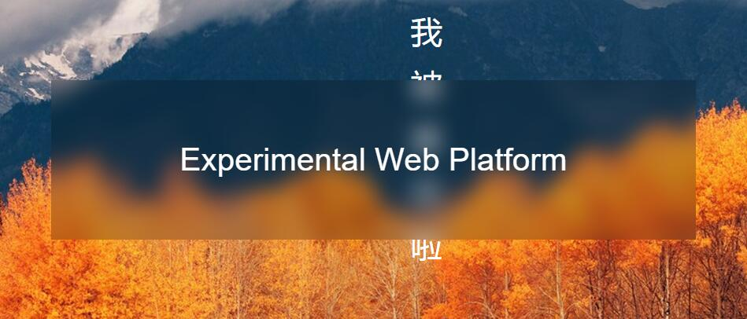

在写这篇文章之前，的我认知还停留在web页面里是无法做到像ios和MAC下那种毛玻璃效果的，虽然我知道filter属性，但是因为它是通过改变整个容器的失焦而不是透明背景的高斯模糊。
今天要讲述的是两个能达到这种背景模糊效果的方法
backdrop-filter属性;- 通过
filter属性配合双重背景图达到背景图能够模糊，包括滚动的时候也有背景模糊效果
backdrop-filter属性其实是一个草案中的属性，所以鲜为人知。但是chrome早在2016年的49版本就支持这个属性了，但默认是关闭的，可能多方面的原因使得这个属性不被默认打开，比如性能问题、草案中、实现效果等。
开启方法是在地址输入chrome://flags/，找到Experimental Web Platform features ，点击启用后重启浏览器。
虽然提案中，但是还是无法阻止我们追求美的决心。下面是开启后的效果。
我
被
盖
住
啦
被
盖
住
啦
Experimental Web Platform
效果是不是很赞，如果您使用的不是chrome，那么下面是预览效果截图

当然了，这种办法肯定是不能用到生产环境中的，因为除了mac和ios下的safari默认支持，其余所有浏览器要么不支持，要么默认关闭，于是下面这个办法就能兼容大多数浏览器，先来看看效果
优点显而易见，缺点也显而易见，因为这里的透明效果不是真正意义上的透明，只是使用了两个相同的背景图，其中一个使用filter来模糊，造成了div本身是透明的错觉。因为我们不是透明的，所以背后的文字全部被挡住了，所以我们会感觉到部分内容没有被穿透。这个效果的实现原理我相信你也可以直接F12查看到。